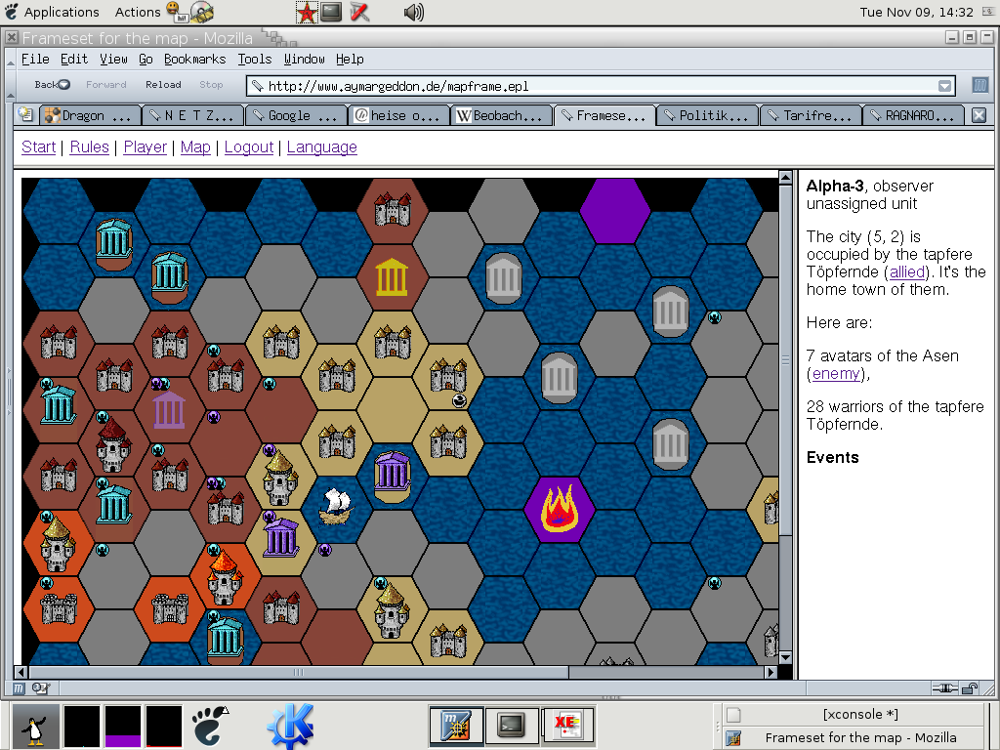

The next Beta-Test will start in the beginning of june.
You can participate if you are willing to help in the development with your bug reports.
Unfortunatly the Rules are in german only in the moment, sorry).
Aymargeddon is free software;
you can redistribute it and/or modify it
under the terms of the GNU Affero General Public
License.
If you have questions, you should ask
A Screenshot of the last game:
